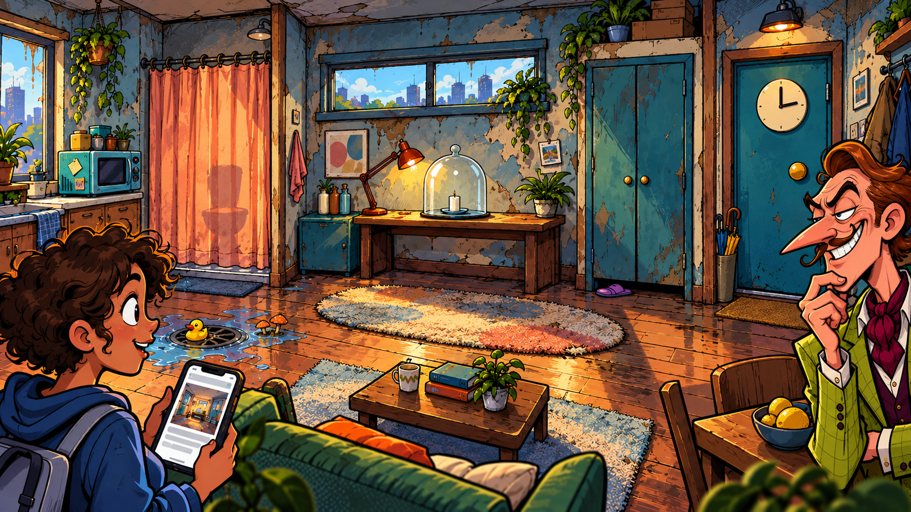
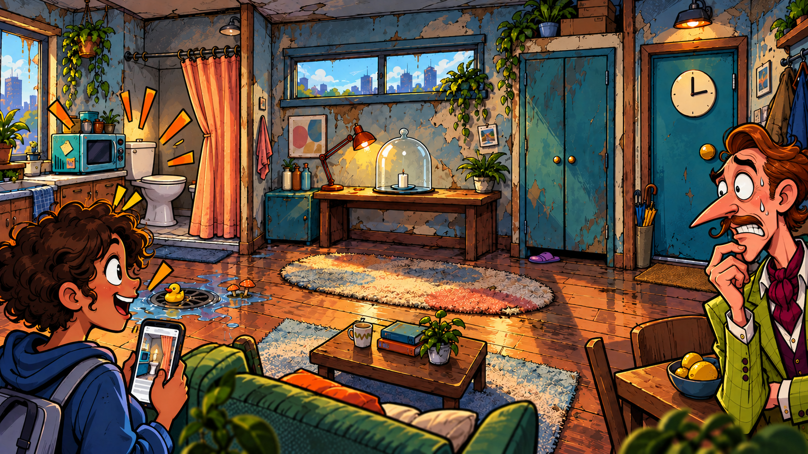
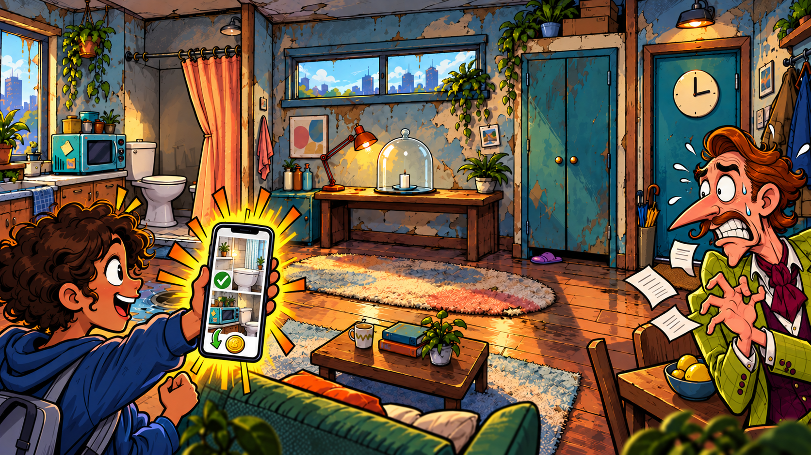
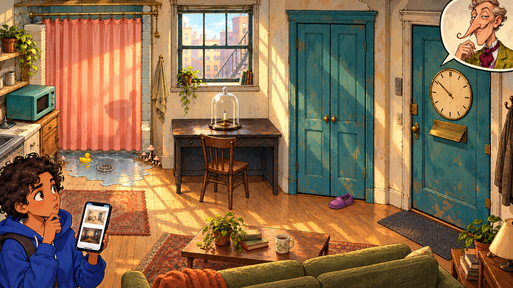
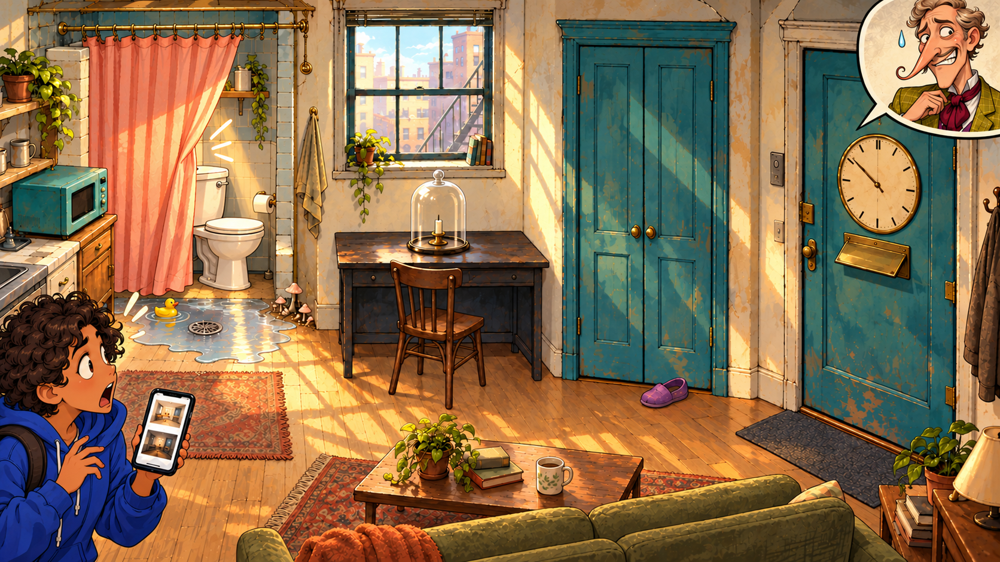
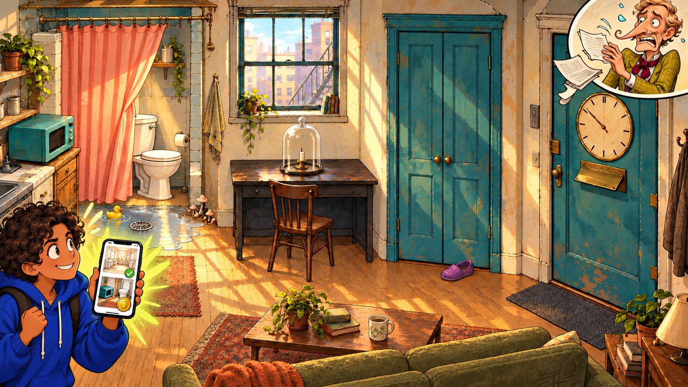
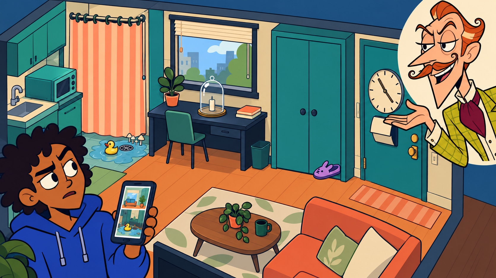
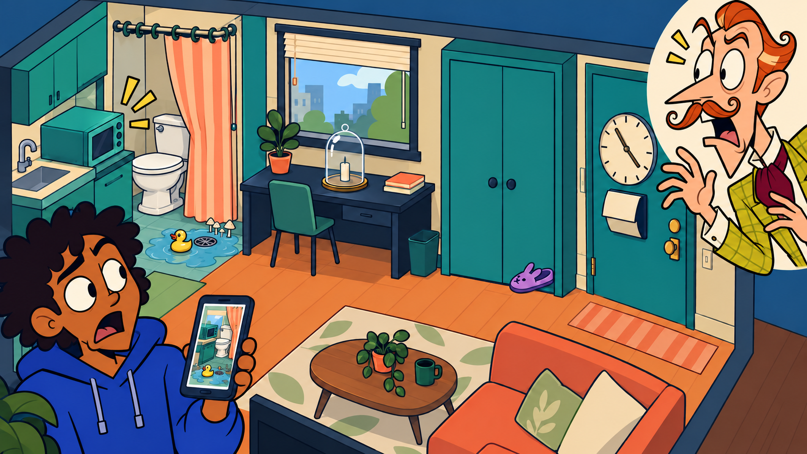
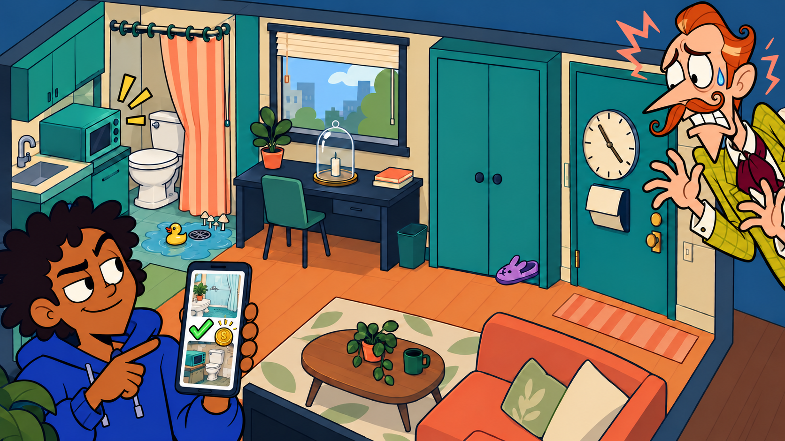

A · Exaggerated Western comic



B · Refined hand-painted comic



C · Original TV-animation look



Concept art only. Same room and five clue motifs. Left-to-right: normal inspection, D1 curtain reveal, D1 evidence rebuttal. Open any image for its original 1672 × 941 view.
These are original AI concepts informed by the CEO's style references 1, 2 and 7. They are neither current gameplay screenshots nor integration-ready assets. The approved G1 evidence logic remains in LEVEL_001.md.








